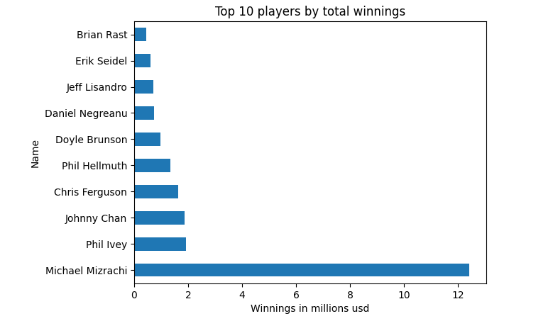

Database Design with SQL
Designed and structured relational database tables using SQL.
Focused on defining primary keys, relationships, and proper data organization.
Ensured efficient data storage and optimized querying structures.
Designed and structured relational database tables using SQL.
Focused on defining primary keys, relationships, and proper data organization.
Ensured efficient data storage and optimized querying structures.
Explored and analyzed datasets using SQL queries. Applied filtering, aggregations, joins, and grouping to extract insights. Transformed raw data into meaningful information through structured queries. Highlights the ability to perform analytical tasks directly in SQL.

Analyzed datasets using Python and the Pandas library. Performed data cleaning and exploratory data analysis. Used basic visualizations to identify patterns and trends in the data. Demonstrates practical data analysis workflows using Python tools.

Dashboard analyzing WSOP data with KPIs, trends, and performance insights.